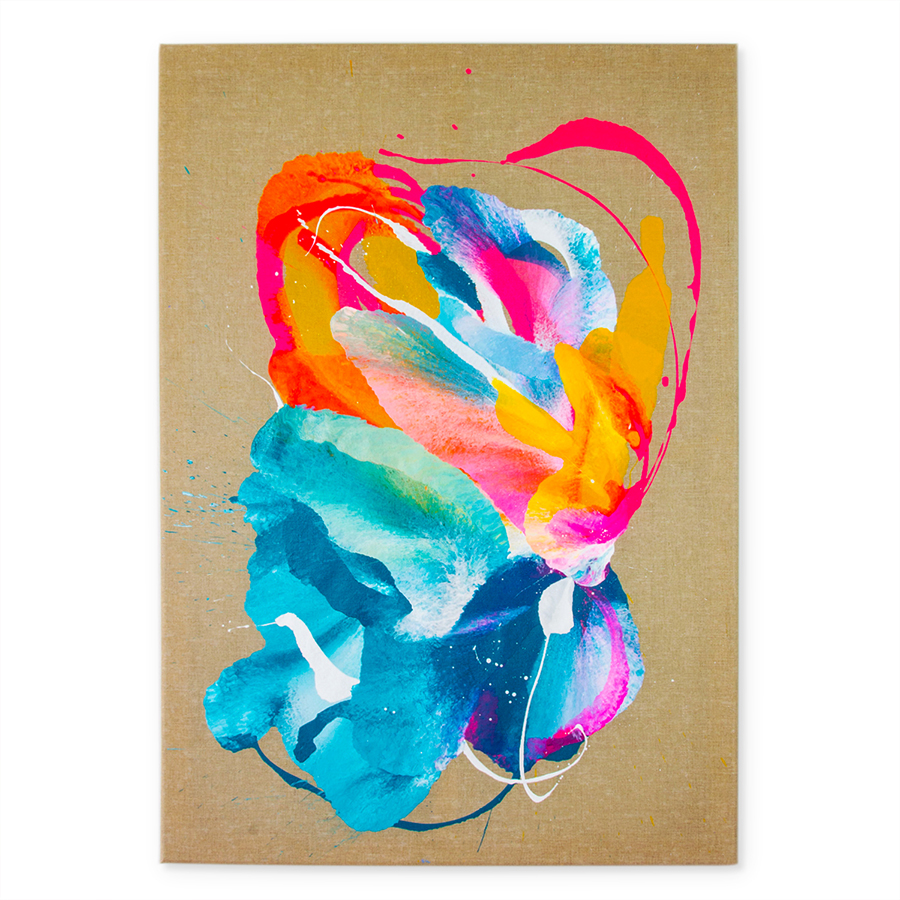

Colour palette
World is colourless
The perception of colour by the eye and the interpretation by the brain is fascinating. Dogs, cats, octopus or a bumblebee – all see colours in a different way to humans. And our perception of colour is different within our own spicy. Two people looking at the same colour will see it slightly different.
And what colour is? To put it very simply – it’s our brains interpretation of light’s wave length. The light goes through the pupil, stimulates retina’s cones and rods and they send the signal through the optic nerve to the brain. The brain then interprets the signal and creates a response.
So basically the world is colourless (according to Fehrman and Fehrman (2004)). “Colour is only a small part of a vast electromagnetic spectrum that can be perceived by human eyes from about 400-nanometers to 700-nanometer measurement.” (Environmental Colour Impact upon Human Behaviour: A Review; Nurlelawati Ab. Jalila*, Rodzyah Mohd Yunusb & Normahdiah S. Saidc).
Colour is epsychological
Even though the world does not seem to have a colour per se, colours affect our lives on many different levels – emotional, psychological, sociological, cultural and if it’s luminosity is matched with our personal colour preferences it has positive effects on our psyche (Jin, H.-R., Yu, M., Kim, D.-W., Kim, N.-G., & Chung, S.-W. (2005). Study on Psychological Responses to Color Stimulation. Focused On User Centered Design Sensibility Engineering Design of Color). But colours can have negative effects as well. If you choose to have a beige, blue or gray dominated painting in the area where you work it may affect your attention and concentration (Knez, 2001; Stone, 2003; Dalke, H., Little, J., Niemann, E., Camgoz, N., Steadman, G., Hill, S., et al. (2005). Colour and Lighting in Hospital Design).
Ding Ning (Art Psychology): "Neither art creation nor art acceptance can be separated from the perspective of psychology." Therefore colour perception and art creation are psychological/emotional processes rather than optical.
Right palette
And indeed - building a colour palette was for me an intuitive process that was taking place on a subconscious level. I have not done a research nor have I thought through the reception of my palette. I have had a preference towards warm colours and cold with warm undertones and I have chosen deep hue cadmium yellow, neon pink and phthalo turquoise based on my preference. It was a psychological process for me and most of my works are based on these three colours although, later on I decided to add crimson red (see red).
But by choosing not only the colours – yellow, pink/red and turquoise but their shades/luminosity, I was choosing consciously shades that will be bright. Shades that will have some life and energy in them. Shades that lift you up.
